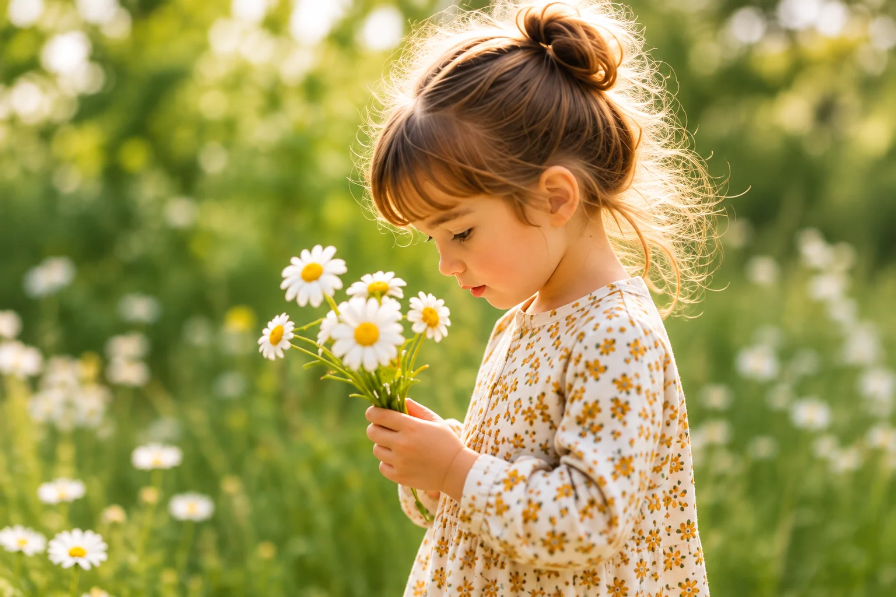
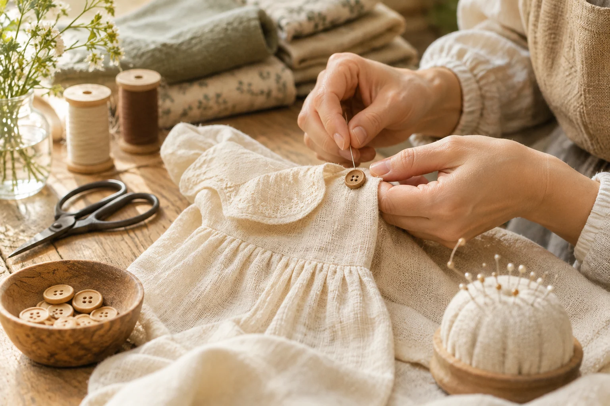

A little about us
For the wonder of being little.
We believe childhood should be filled with curiosity, comfort and a little bit of wild.

Let them be little.
For muddy boots, pockets full of treasures and the days that turn into stories.

Made with a little more thought
Thoughtfully made. Beautifully worn.
Soft natural fabrics, easy silhouettes and enduring details — made for the everyday wonder of growing up.
A little note from us.
This is a fictional brand created as an independent design portfolio project.